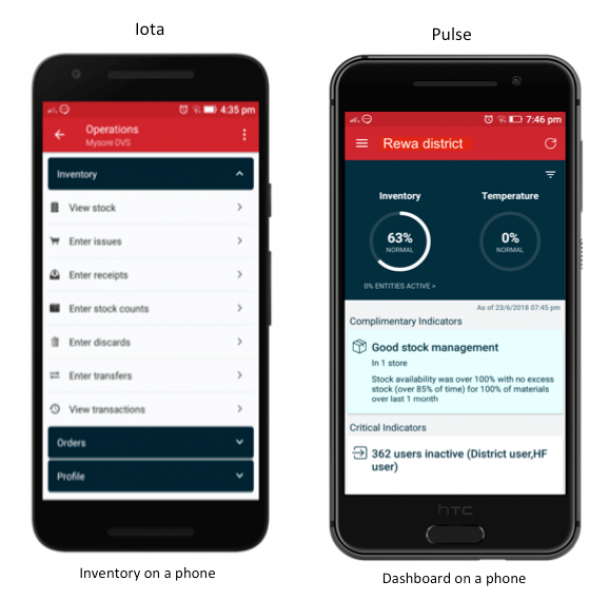
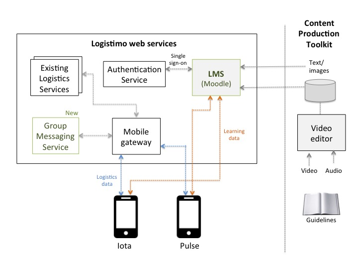

Technical Requirements Disclosure
Logistimo satisfies the technical requirements for C0 as noted below:
- Logistimo is currently deployed in >25,000 health facilities across 5 countries including India, Myanmar, Indonesia, Zambia and Uganda.
- Logistimo is open sourced under the GNU AGPL v3 license (code is available on Github).
- Software has been applied to a health domain, including immunization, reproductive health and essential medicines
Executive Summary
Logistimo is an open source supply chain management platform with a hosted service that enables optimal management of inventory and last-mile delivery in low-resource supply chains by leveraging mobile phones and cloud computing. It offers three key services: (1) inventory management (including forecasting and optimization), (2) remote temperature monitoring (of cold-chains), and (3) distribution management (including order and transportation management). Logistimo, as a hosted service, is currently deployed in 5 countries including India, Myanmar, Indonesia, Zambia and Uganda, covering over 25,000 health facilities managing vaccine cold-chains and/or reproductive health supply chains. Local partners including aid agencies (such as UN) or Ministries of health have achieved high availability (>95%) at high data reporting rates [1], and have ensured good quality of storage conditions until the last-mile of the supply chain with real-time visibility and analytics. In India, for instance, United Nations Development Program (UNDP) and the Government have leveraged the Logistimo platform effectively in the eVIN project to achieve high availability (>95%) across all vaccines in >20,000 last-mile health facilities, while also enabling data-driven policy changes leading to lowered costs [2, 3].
Logistimo services are built on the principle of bottom-up empowerment, where both health facility workers and district officials (or supervisors) are empowered with mobile applications for inventory management and supply chain monitoring, respectively. The health workers at the facility, such as a pharmacist or nurse at a village’s Primary Healthcare Center (PHC), use a store management application called Iota to manage inventory, create orders with automatic recommendations of optimal quantities (using predictive optimization), and track delivery. In immunization cold-chains, health workers are also able to monitor the temperature of the vaccine refrigerators in real-time on their phones. District officials, such as the District Health Officer or District Immunization Officer, on the other hand, are able to monitor the entire supply chain in their geographical jurisdictions through easy-to-use dashboards and alerts on supply chain risks on a mobile application called Pulse. They are also able to recognize good performance and motivate the workforce through a “social” approach of “liking” well-performing stores (as done in social networking sites). In addition, in some places both critical and good performance events are streamed on a digital monitor (such as a wall-mounted television or digital monitor), which exerts “social” pressure to act. Enabling monitoring in easy to use ways – be it mobile applications or publicly visible digital monitors – have shown to improve availability to high levels [1, 2], achieve data quality quickly with a simple training model [4], while also driving timely actions within the supply chain to mitigate risks [5].
Challenge
At this time, Iota (store management) is being used in over 25,000 health facilities across the 5 countries, while the Pulse (supply chain monitoring) is being used in over 370 districts across 2 countries. The applications are available in 5 languages including English, Hindi, Bahasa, Portuguese and French. In spite of an initial training session, we find that users do not uniformly understand how to effectively use certain features of the application or follow standard operating procedures correctly. They are also not fully aware of the all the features in the application and their benefits. This is due to the fact that different users have different capacities or attention bandwidths, and there is churn of personnel in the system. A one-time, centralized training session does not effectively address these issues. It is expensive to repeatedly re-train personnel to sustain capacity at a high quality. Even if this is done, there is churn in human resources, and capacity has to be rebuilt in the new persons that arrive. All these contribute to degraded quality of service, which also leads to a less motivated workforce.
Solution approach
We intend to enable a scalable model for ongoing capacity development of last-mile workers using a combination of:
- Easy-to-use self-serve, e-learning service with video content that enables self-learning and capacity assessments.
- Community interactions with peer co-workers, supervisors or experts through an online group accessible within their mobile applications, which offers a sustained high-touch support. Such a group enables one to ask or answer questions online, as well as share of best practices.
Both of these will be made contextually accessible through the Iota and Pulse mobile applications that are already in use. The former enables deeper self-learning, while the latter enables ongoing learning through human mentorship that anyone in the community can offer online.
Content sustainability
When relying on multi-media content, there is an additional challenge of content sustainability, wherein the content has to be evolved continuously as the application features or operating procedures evolve. This will require additional resources, time and cost, and there is a need for continuous investment. Secondly, any piece of content would have to be customized to different geographies, including language and captions, if closed captioning is used
We plan to enable sustainable content in a couple of ways:
- Optimize the content production process by addressing the structural design of content that maximizes learning while minimizing content maintenance. Concepts of information chunking using in e-learning design will be leveraged in this context.
- Provide a content production toolkit with a recommendation of self-serve production tools to produce or customize content, along with guidelines for good content design. With the evolution of video technologies, there is a proliferation of product explainer video tools, for instance, that enable self-serve video creation, thereby reducing costs and time of production.
- Enable a community of authors within our customer groups to collaborate and evolve content, as the application features and operating procedures evolve.
Together, we expect these to enable sustainable online learning content that will be cost-effective to create, customize and maintain.
Proposed project
The proposed project aims to build and deploy the web services, mobile application and sustainable content required to enable cost-effective learning in a low-resource environments, with pilot in India.
In particular, it will involve the following:
- Software development and integration which would enable two services for self-learning and community support for ongoing capacity improvements. These include: (a) a multimedia, multilingual “self-learning content service”, integrated with the mobile applications to deliver contextual help and support to users, and (b) a “group messaging service” to enable users to interact online with their local community and experts to answer questions or share best practices.
- Sustainable content development including procedures and self-serve tools for content organization and rich-media content.
- Evaluation of capacity development using the proposed tools and methods through a pilot in India.
The above services will have open APIs and any new code will be open sourced under the GNU AGPL v3 license for use and evolution by the developer and implementation communities. The content production toolkit will also be offered for anyone who wishes to create or customize content. The learning from this project would be shared with the global community so that others could adopt similar practices and tools to empower health worker capacity in a scalable and cost-effective manner using mobile technologies.
We believe that the outcomes of this project would deliver concepts and practical artifacts that would strongly empower and motivate the last-mile workforce to perform better, leading to a higher quality of service. Concepts and tools generated here can be used well beyond supply chain applications to any other digital health applications
Consortium team
The consortium will include the following organizations with Logistimo being the primary.
Logistimo
The prime organization that will develop this service is Logistimo. Logistimo is an 8-year old organization (started in 2011) that has a proven track record of building and implementing highly scalable and innovative information technology based solutions for managing low-resource supply chains, with demonstrated impacts [1, 2, 4]. Over the years, the service has scaled to work for over 25,000 facilities across over 400 districts in 5 countries, and has evolved with iterative learning from the field. Logistimo’s organization includes teams with expertise in information technology and software engineering, supply chain analysis and design, and predictive analytics using big data. The software platform adopts a scalable and reliable micro-services based architecture, with an ability to easily add new web services and mobile applications to the stack. The team is experienced in both cloud-based and in-country hosting with ability to manage large volumes of transactions and data. As of today, our services are processing over 2 million inventory transactions per day, 30 million temperature samples from remotely monitored cold-chains and terabytes of analytical data.
Logistimo is open sourced under the GNU AGPL v3 license (code is available on Github). Logistimo is currently deployed in 5 countries including India, Myanmar, Indonesia, Zambia and Uganda.
Key members
The key members of this project will include the following.
- Arun Ramanujapuram (Product and Service design)
- Kaushal Shukla (Content management)
- Charan Malemarpuram (System architecture)
- Shailen Pandya (Engineering management)
- Kavya Shetty (Training consultation, deployment and support)
United Nations Development Program (UNDP)
United Nations Development Program (UNDP) is a worldwide organization with significant experience in implementing solutions for low-resource environments. UNDP, India is the implementation partner of the Ministry of Health and Family Welfare in India and has implemented the eVIN project using Logistimo’s supply chain platform across 15 states in India over the last 3 years since September 2015. The implementation is working well at a high scale achieving strong availability (>95%) across more than 20,000 health centers.
We plan to evaluate the above services, along with UNDP, India, through pilots in the immunization supply chain in India, where we will pick 2-3 districts to evaluate the solution and get user feedback.
Key member: Dr. Manish Pant
Digital Campus
Digital Campus is a programme enabling health-specific e-learning cotent for building capacity of front-line health workers in low-resource environments in Africa and India. They have experience in creating digital content that are already being used by front-line health workers in some places in India, Ethiopia and Nigeria. They are a potential partner to help achieve good e-learning content design for health workers in supply chains, as well as capacity assessments at scale, given their good field experience in this area.
Key member: Blanco Velasco Roman
Moodle community
Moodle, an open source Learning Management System (LMS) appears to be a strong candidate at this stage to leverage for enabling an e-learning servce. Moodle is robust, has an offline mobile application as well as a desktop application, in addition to their web interface, that is sufficient for our learning and capacity assessment needs. It is feature rich and supports a wide-range of capabilities including multi-media, collaborative content authoring, activities around capacity assessment (such as quizzes), student recognition (e.g. badges), and so on. It is used by over 100 million users worldwide. The Moodle project itself is well-supported by an active international community, a team of dedicated full-time developers and a network of Moodle certified partners. This ensures that the software is continuously evolving for the better with major new releases coming every six months. We will rely on the Moodle community for support, when needed.
NOTE: At this time, Moodle appears to be a strong choice, given its features, their new mobile application, its widespread use as well as a very active development community around it. As part of this project, we also plan to evaluate the mobile applications of OppiaMobile and Chamilo, which are other open source e-learning applications.
Project description
Logistimo’s platform is built on the principle of bottom-up empowerment, which requires that every person in the human value chain – from the last-mile to the first-mile – be empowered to effectively manage performance of their stores or the supply chain networks in their respective jurisdictions. Empowerment in this context implies at least the following:
- They have sufficient capacity and support to manage and perform well.
- They have the required data and analytics to make good decisions.
- They are able to justify their actions (in case it is questioned).
Empowering workers at the last-mile, below district, is challenging due to the following reasons:
- Health workers at the last-mile service delivery points, such as a pharmacist/nurse at a PHC, may have limited knowledge of logistics and operating procedures. Their ability to use technology can also be limited.
- District officials, such as a District Health Officer, may have limited attention bandwidth due to multiple responsibilities, frequent travel, limited support staff and limited use of computers or any other form of technology.
- Within a given district, there can be non-standard procedures and practices around data recording and logistics, and poor coordination leading to lack of visibility and low quality of service, including stock outs and degraded storage conditions (esp. in a cold-chain).
- The culture of data recording and usage is low in such environments, both at the last-mile facilities and at the district headquarters (such as the district health office). Even where data exists, the ability to analyze and act on that data is limited.
Logistimo has developed and deployed a couple of mobile applications – Iota and Pulse – that can be consumed on smartphones by people managing a store or a supply chain network. Iota is used by health workers at last-mile service delivery points, to manage inventory and orders. It enables them to enter simple inventory transactions such as issues, receipts, discards and stock counts, while offering them real-time visibility of stock, alerts on low stock or expiry, optimal order quantity recommendations (based on predictive optimization), and transaction audit trails. This, in turn, empowers the health worker by enabling a relatively standard data recording mechanism, awareness of risks through timely alerts, easy-to-consume analytics for decision support and visible audit trails that are verifiable by anyone. Pulse is used by district officials, such as the District Health Officer or the District Immunization Officer, to monitor the supply chain using real-time dashboards (on inventory and storage conditions), review critical risk indicators, and recognize stores with consistently good performance using a “social” mechanism of appreciating them through “likes” (as done in Facebook, for instance). This empowers a district official, even with limited bandwidth, to relatively easily understand the current state of the supply chain, enable proactive actions through timely awareness of risks, and motivate the workforce by recognizing good performance. This, in turn, enables a higher quality of service and a more motivated workforce.

Leveraging mobile applications for supply chain monitoring, including pro-active risk management and workforce motivation has shown to achieve strong adoption, with over 250 district officials using it on a daily basis, and has enabled timely, coordinated actions in the supply chains along with new practices for workforce performance recognition (enabled using the social “likes” feature) [5].
These applications are typically deployed through a centralized training process by aggregating relevant personnel at the district and using lectures, training documents and/or offline videos as part of the training session. After the training, application usage and data entry of health workers is monitored, and district officials offer phone-based support, wherever necessary. However, there are a few challenges in ensuring sustained capacity to use the applications and following standard procedures to ensure good service. These include:
- District officials tend to have low bandwidth due to multiple responsibilities or travel, then oversight and support is not available to the health workers.
- If there is churn of personnel in the system, be it at the health facility or at the district headquarters, then new training is required to ensure business continuity, which is expensive on a per person basis.
- As new features are rolled out, or operating procedures are changed, frequent re-training of personnel is expensive and not possible due to budget constraints.
To address the above challenges, we propose a hybrid model of sustained capacity building using a combination of (a) self-learning through audio/video help and (b) an online community forum comprised of health workers, district officials and experts/technicians in the same district, both of which are accessible through their mobile applications. The self-learning content enables deep learning, while the community forum helps resolve queries and share best practices on inventory and logistics management.
Further, given the demographic spread across countries, each country or supply chain may require customizations to the content, including language of the audio, branding, or captions. The solution approach will explore a sustainable model of content creation and maintenance that will ensure faster and cost-effective customizations of the videos.
Technical approach
The approach to the problem of sustainable capacity building is three-fold:
- Enable a Self-learning content service that allows one to publish rich-media content, including text, audio and video consumable in HTML or other standard formats that can be rendered on a mobile application and/or a web browser. A standard, open source Learning Management System (LMS) will be leveraged for enabling this.
- A Group messaging service that includes peers (say, all health workers in a given district) or experts, which enables them to seek local community support through their mobile application. This would be similar to a Whatsapp group, where users can post questions and comments (along with pictures) and others can respond to it. This would enable people to clarify their understanding as well as share best practices, thereby supporting a self-learning approach with a high-touch human experience. This, we believe, could be a scalable model for sustained capacity building.
- A Content production toolkit that enables a sustainable content production process and tools that helps one to generate or customize quality content in a cost-effective manner. There are two aspects of content sustainability that we will consider in this phase: (a) maintainability of content, and (b) cost-effectiveness, esp. keeping in mind the need for customization across geographies and supply chains.
Self-learning content service
The self-learning content service will enable publishing and retrieval of text, audio or video content, to help the user achieve specific supply chain goals using the mobile applications and the relevant operating procedures. The content could be in the form of usage guides, FAQs, operating procedures, or troubleshooting guides. A community of geographically spread out logistics professionals already familiar with the applications can be authorized customize or publish content in localized languages, with an approval process to assure content quality. This will enable us to support deployments in multiple geographies in multiple languages in a scalable manner, while enabling local customizations. The content should be contextually accessible through the respective mobile phone applications (of Iota and Pulse), optimized in size to be downloaded or streamed on 2G mobile networks and allow offline usage in low or no network areas.
To enable this, the following services will be enabled and integrated into the mobile applications:
- A backend publishing service that enables one to publish text, audio or video content along with the context of their use. Permissions on who can publish what type of content along with moderation controls will be enabled to ensure quality. This could be an existing learning management system, which offers APIs for integration.
- Application Programming Interfaces (APIs) within our system for accessing such content on our mobile applications.
- Features in the mobile application to retrieve and display such content in the context of feature usage.
Moodle, an open source learning management system, appears to satisfy our needs in this context, and is currently the primary software candidate based on our evaluation at this time. The Moodle mobile application offers a host of features for content consumption, activities (such as quizzes) and capacity assessments of its users. It also offers applications on desktops and Surface tablets, along with a mechanism to synchronize data entered in offline (no network) mode.
At this time, Moodle appears to be a reasonable choice for the kind of requirements that we have, based on our own initial research, as well as market research of the top 10 open source learning management systems [
6].
Group messaging service
The group messaging service is an ‘online group’ accessible from the mobile applications, similar to a Whatsapp group, but with topical organization of conversations. Users can post questions, answer questions or share their learning or best practices with each other. The messages can be against a topic, and content can include text, photo or audio. Users can join one or more relevant groups to interact. In the absence of supervisory bandwidth, this enables any knowledgeable person in the group to respond to questions or guide users who need help. It thereby enables a virtuous cycle of sharing and learning that further improves the capacity of individuals and the community as a whole. Posts can be “liked” (as done to Facebook posts, for instance) or “marked helpful” (as in help forums). Such signals can further be used to identify “competent” community members, and perhaps incentivize them to continue such support. In a similar vein, any abuse can be filtered out through a combination of community reporting and automated filters. This, in turn, leads to a high quality community support system that offers mentoring and sharing of best practices, thereby enabling the process of sustained capacity building.
This service will manifest in the form of a web service, and will offer relevant APIs for the mobile applications or other services to integrate this feature. This service will be built as a new web-based, micro-service with REST APIs, as part of the Logistimo platform. The source code will be made open under the GNU AGPL v3 license.
Content production toolkit
The content toolkit enables a way for authorized personnel in the user community to produce or customize content using a set of recommended tools, guidelines and existing content resources available in a repository. The content production process will be designed with sustainability of content in mind.
In particular, the toolkit will address the following:
- Guidelines for effective information chunking to design content in a manner that is optimal for both e-learning and content maintenance. Chunking will also ensure that changes to features or workflows in one part of the application will not impact the others. This should minimize effort of content maintenance, while maximizing learning objectives. Guidelines for chunking will be published. Further research will be required in this project to determine the most optimal strategy for learning content chunking.
- An optimal content production process that leverages audio mixing to mix audio into video, thereby enabling easier customization of videos. Video and audio content will be recorded separately and mixed together later on. This would enable one, for instance, to simply replace the audio in a new language while keeping the video as is, or add captions in another language. A searchable content repository of the constituent video and audio components in different languages would be made available, say, using the LMS repository or Google docs or similar repository. Through this process, we hope enable a cost effective process of customizing content for different language contexts.
- Self-serve, rich-media content development tools, which will allow one to create or customize content themselves using guidelines and best practices. Explainer video creation tools will be evaluated and recommendations will be made for others to use. This will reduce production costs significantly compared to conventional, outsourced video production for such purposes.
The content toolkit will be opened to the community of users, including a the searchable content repository, guidelines for cost-effective production and customization, and a recommendation of video editing/mixing tools.
Deployment and evaluation
Once the application features are developed, it will be deployed in pilot mode in the immunization supply chain in select districts in India with support from UNDP to evaluate the effectiveness of the service. In particular, the adoption of the content/features by users and their effectiveness in building sustained capacity will be evaluated. Worker’s knowledge acquisition will be evaluated through scores on quizzes and could be correlated to improved inventory performance in the supply chain. Learning from the pilot will be published and the features/model will be fine-tuned to make them more effective. This will be shared with the broader global health community in the interest of enabling bottom-up empowerment and capacity building in similar contexts elsewhere.
Use cases and user stories
Use cases and user stories by actor are described below.
Actors
The key actors in this system include the following:
- Health workers in health facilities at the last mile, as well as warehouse managers at the district or above, who use the Iota application for store management.
- Supervisors or officials at a district or above who are using the Pulse application for monitoring the supply chain.
- National Training Administrator at the National or State levels who are responsible for training and may customize content to their respective languages and terminologies.
- Content managers, typically from Logistimo or an organization authorized by Logistimo, create and manage the content for e-learning of features and operational procedures.
Health worker
A health worker is responsible for managing inventory in the health facility at the last-mile or at the higher level warehouse (such as a district warehouse).
Use case
A health worker is typically at the last mile health facility and is responsible for managing inventory optimally at the facility. The key use cases of health worker (or the district warehouse manager) include the following:
- Health worker learns how to perform data entry: Health worker is using the mobile application to enter inventory data (such as issue, receipt, stock count or discard) in the Iota application. He/she clicks the in-context help option and is redirected to the LMS application (say, Moodle) on the mobile phone. This application shows a screen with an overview and a video is the user’s native language. The user plays the video and takes a short quiz soon after (if he/she is offline, the answers to the quiz are submitted later to the server). Subsequently, the user returns back to the Iota application and continues with data entry.
- Health worker asks a question on the group: Health worker does not fully understand a particular operating procedure. He/she clicks an option to ‘ask a question’ in the context of the data entry operation help content. The user can now post a simple question, which is sent to the group of their peers and supervisors in that district (or jurisdiction). Members in the group are notified, with one or more of them posting back a response, potentially leading to a solution or a sharing of a best practice.
User stories
The key user stories for the health worker include the following:
- Health worker clicks on a help icon in the Iota application and is able to review a course video on data entry (inline or within the LMS mobile application).
- Health worker comments or asks a question on the group, after reviewing others’ comments.
- Health worker responds to a quiz prompted by the application.
- Health worker reviews his/her performance on quizzes.
- Health worker provides feedback on learning experience.
Supervisor
A supervisor is responsible for monitoring the supply chain and ensuring good supply chain performance. They could be district officials or state officials or anyone else with the designated logistics management responsibility in the district or state.
Use case
The key use cases for a supervisor include the following:
- Supervisor reviews how to monitor inventory performance: Supervisor accesses the help option associated with the supply chain dashboards. He/she is redirected to the LMS application say, Moodle) on the mobile phone. This application shows a screen with an overview and a video is the user’s native language. The user plays the video and takes a short quiz soon after (if he/she is offline, the answers to the quiz are submitted later to the server). Subsequently, the user returns back to the Iota application and continues with data entry.
- Supervisor orients everyone to a change in procedure through an announcement: Supervisor makes an announcement in the group on a change of procedure from what was originally stated in a video, and seeks feedback. Other members in the group post back in response with their feedback.
User stories
The key user stories for the supervisor include the following:
- Supervisor clicks on a help icon in the Pulse application and is able to review a course video on supply chain monitoring (inline or within the LMS mobile application).
- Supervisor responds to a quiz prompted by the application.
- Supervisor answers the question or responds to a comment from a health worker on the group.
- Supervisor reviews the analytics on performance on quizzes of health workers in his/her jurisdiction.
- Supervisor reviews his/her own performance on quizzes.
- Supervisor provides feedback on learning or monitoring experience.
National Training Administrator
A National Training Administrator is responsible for capacity development of the human resources. In this context, they also determine the nature of the training content.
Use cases
The following is the key use case for this type of user:
- National Training Administrator customizes e-learning content: The National Training Administrator browses the repository of training content, and customizes a video. In this context, he/she just changes the audio track to the local language, and mixes it with the video track using the recommended mixing tool. He/she publishes the updated video content back to the LMS repository with the relevant language tag and geographies of use. After a review, this video becomes accessible within the mobile applications, as well as to others who wish to reuse it.
User stories
The key user stories for the National Training Administrator (NTA) include the following:
- NTA searches/browses the training content repository of the LMS for a specific learning video.
- NTA uses a video editing tool to mix learning video with audio in his/her country’s native language (as per the guidelines in the content production toolkit).
- NTA publishes the customized learning video to the LMS with the relevant metadata, including language.
- NTA tests the display and rendering of the video in the Iota/Pulse applications (once video is approved).
Content Manager
The Content Manager is responsible for generating training content (video or audio) and publishing it to the LMS. He/she is a person from Logistimo or authorized by Logistimo to create learning content for application features and operating procedures.
Use cases
The following is the key use case for this type of user:
- Content manager creates learning video on a given topic: Content manager designs the various topics for video creation using the chunking guidelines provided (to ensure easy maintainability of the video, while maximizing learning objective). He/she may work in consultation with a training specialist. Content manager uses the recommended tool to create independent video and audio tracks. The video is created by recording actions in the product or any overlays required for better visualization. He/she then mixes these to create the final learning video for the topic, while following various guidelines to ensure the quality and usability of the video, while also taking care of ensuring it can be easily customized across geographies, if needed. The unit content files (the video and audio tracks) are uploaded to a specified repository so that is can be discovered by others who wish to reuse either of them. These units are also linked to the final video, to help identify the components of the whole.
- Content manager publishes training content on a given topic to LMS: Content manager creates a new topic with relevant metadata, and publishes the content video, along with the necessary language tags and geographies of use to the LMS. The LMS generates a thumbnail and enables a mobile-friendly landing page for this content, while also indexing it to make it discoverable to others browsing the LMS, as well as through the mobile application. Content manager also specifies the necessary permissions for others to access or modify the content and/or its constituent parts (for instance, a 3rd party content provider could be give access for maintaining the content).
- Content manager approves a customized learning video: Content manager reviews a customized learning video published by an authorized user in the authoring community. He/she approves the learning video so that it is provisioned to be accessible from the mobile application.
User stories
The key user stories for the Content manager include the following:
- Content manager uses an explainer video tool to create learning videos for a set of features in the mobile applications, by mixing audio separately with video (using the content production toolkit guidelines).
- Content manager collaboratively helps customize a learning video along with another authorized content author.
- Content manager publishes a learning video to the LMS along with its constituent parts (of video and audio) and relevant metadata (including domain of use and language).
- Content manager reviews a request to approve a customized learning video from an authorized content author, and approves it.
- Content manager updates a learning video and textual overview with a modified one.
- Content manager discontinues a course and removes it from the LMS.
Digital technologies
The key digital technologies that will be used in the project includes the following:
- Logistimo supply chain management platform, where in the group message service will be built into the application.
- Moodle, for content publishing and mobile application access of training content. At this time, Moodle appears to meet our needs for enabling learning on a mobile application, with offline synchronization capability. In the initial phase of this project, we will more deeply evaluate Moodle for ease of integration alongside a few other open source learning management systems, such as OppiaMobile or Chamilo.
- Self-use, explainer video creation tools, for enabling video content creation.
System model
The model of an integrated system that enables learning and capacity building in the context of a logistics application is shown below.
The above figure shows the Logistimo Logistics Service, which includes a new Group Messaging Service that can be accessed by the mobile applications via REST APIs through a Mobile gateway. The Learning Management System (LMS), such as Moodle, will enable e-learning and will use a Single Sign-On (SSO) authentication to provide a seamless login experience for registered Logistimo users.
The Iota and Pulse applications will enable contextual links (such as
Android app links) to invoke the Moodle mobile or desktop application access language-specific learning content. The learning content itself will be rendered in the LMS’s mobile application.
Content production toolkit
Learning content itself will be produced in units of multi-lingual text, images, audio and video tracks, and will be stored in a document repository of the LMS or an independent document store such as Google Drive. Mixed video content (mixed with language-specific audio tracks) will be published to the LMS. The units of content in the document repository can be reused to customize learning content for other geographies. The content production process will leverage one or more
explainer video creation tools that can help one customize videos in a self-serve manner, and can reduce costs of production. Guidelines for content production and tool recommendations will be published as part of the Content production toolkit. The videos will adhere to the MPEG video standard.
Community feedback
Logistimo’s current community is comprised of a global group of its users across health supply chains, implementation/deployment partners, Ministries of Health, aid agencies, funding organizations, software partners, University professors, and consortium partners. In particular, the following channels of feedback will be leveraged.
Community | Description | Feedback |
Implementation partners | Logistimo currently has partnerships with at least 8 implementation agencies including UNDP India, UNDP Indonesia, MoH Zambia, MoH India, JSI, VillageReach, WHO and Karuna Trust (India). Key personnel in these organizations channel early feedback on requirements, and have their own internal processes for collecting field feedback as well. | Implementation partners would provide early feedback on requirements and design. |
Funding partners | Logistimo’s funding partners include Bill and Melinda Gates Foundation (BMGF), Shell Foundation (SF) and Khosla Impact Ventures. BMGF and SF in particular have significant experience and contacts in the global health and logistics context in low-resource environments, and can provide relevant insights on success/failure of similar projects. | Early feedback will be sought to them during the research phase to get insights on success or failure of similar projects. |
Consortium partners | Consortium partners such as Digital Campus and UNDP India, along with PATH, can offer relevant insights on e-learning content development and what would work for health workers in low-resource contexts | Feedback during content design and post content development |
User community | Logistimo’s user community comprises over 25,000 users across 5 countries of India, Myanmar, Indonesia, Zambia and Uganda. Each user has an option to provide feedback using a feedback-from in their respective mobile applications. This is one of our strong channels to get feedback from the field, and will be leveraged for this project as well. This offers a very strong bottom-up mechanism to evolve this software to drive real value back to the community. | User’s would provide feedback through the mobile application post deployment |
Technical consultants | Logistimo has strong technical consultants for validating architecture and infrastructure configurations, and help in ensuring that the designs are scalable, highly available, well-performing and secure. | Feedback on technical design and infrastructure configuration, post the design phase. |
Self-assessment on the Global Goods Maturity Model
The self-assessment of the Logistmo platform against the Global Goods Maturity Model is available here
(Global utility = 10, Community = 7, Software = 9).
Global good maturity
Core area | Adherence |
Global utility | The community-based e-learning service, at scale, will be deployed as part of the Logistimo platform, which will cover at least 5 countries covering over 25,000 health facilities. The source code will adhere to best practices of software development, and will be opened under the GNU AGPL v3 license. The service will also be offered in a hosted manner as part of the SaaS (Software-as-a-Service) model currently followed by Logistimo. |
Community support | The developer community spaces of both Logistimo and the LMS provider (Moodle) will be leveraged to ensure that the software evolves with feedback from the community. There is a good feedback collection process in place through the application and partners. The Customer Support Team of Logistimo has evolved a Deployment Toolkit, and has significant experience in training the trainers to further impart training within their respective countries. The same will be followed for this new service as well, with support from new consortium partners. |
Software maturity | Technical documentation will be created for the architecture/design of the service, along with source code comments, which will enable other developers to easily understand the system. Software itself will be packaged in a manner that it can be easily installed, along with installation instructions. Logistimo leverages Docker containers to build, ship and run the application anywhere. Logistimo follows a strong engineering and quality assurance process, involving automated unit and integration tests. APIs will follow the REST conventions and will enable anyone to integrate easily. The system can be horizontally scaled, and can be deployed to achieve high-availability, and will cluster management enabled using Kubernetes. Data will be fully secured as per industry standard practices, with sufficiently strong authentication and role-based authorization mechanisms. |
Digital Health Atlas
Registration of this project on the Digital Health Atlas is available
here with identifier
IN1de12f82.
Work plan and schedule
The work will be divided into various phases, with a specific set of deliverables from each phase.
Phases of work
The project will be divided into four phases each with specific deliverables, as described below.
- Tools and methods research: This represents an initial research to ensure that we have a strong validation of our hypothesis or assumptions. In particular, the following research areas will be covered with stated outcomes: (a) What is the best tool to use as a learning management system (LMS)? At this time of our online research, Moodle has come up as the best tool that satisfies all the requirements including robustness, scalability, large community adoption and ease of integration, with a new offline Moodle mobile application that is rich in features. We will more deeply evaluate a few other open source learning management systems, esp. on ease of integration, and publish our findings, and (b) What is the optimal method for content chunking that can optimize both learning and content maintenance objectives?What tools can be used for this process? We will publish the guidelines and tools for content creation as part of a Content production toolkit. In this context, we will perform research on the most effective e-learning content/methodology, based work already done in low-resource settings, such as [7], or that of DigitalCampus.
- Software development: This phase will involve the following with stated deliverables. The software will adhere to best practices of software engineering and will be available through a source code repository on Github. The deliverables in this context include: (a) Enabling learning content access within the mobile apps: Integrate the selected learning content management system with Iota and Pulse apps, and (b) Enabling group messaging access within the mobile apps: Build a group messaging service with REST APIs and integrate with the rest of Logistimo services.
- Content development: This phase will enable development of learning videos for Iota and Pulse applications, as per the guidelines and practices established earlier. Initially, a subset of features will be selected for content development, internally evaluated, and the feedback will be used to refine the quality of the content and the process. The content development will be achieved through a closed-knit group of individuals within Logistimo, and subsequently, opened up to one or more of our implementation partners for customization. This would help refine the content production toolkit guidelines and methods.
- Field evaluation: This phase will actually involve a pilot rollout of the service and the content in one district in the immunization supply chain in India, to enable real-world feedback. Field evaluation will be done and the feedback will be incorporated before any scale up begins. This will help us inform further evolution towards scale. The following areas will be evaluated. (a) Software usability, (b) Content quality, and cost/time of production, and (c) Community involvement in support.
Post the field evaluation, all conditions being correct, the content services will be scaled to all districts in India across 12 states, and possibly in Zambia and Indonesia, as well.
Expected schedule
The expected schedule and responsibilities for the project is depicted below
Roles and responsibilities
The roles and responsibilities in the project are as depicted in a RACI chart below.
Project deliverables
The project will enable the following deliverables:
Deliverable | Phase | Responsibility | Due on (from start) |
Tools and methods research complete | Research | Logistimo (in consultation with DigitalCampus and UNDP) | Month 2 |
Software design | Software development | Logistimo (in consultation with UNDP and DigitalCampus) | Month 4 |
Software complete | Software development | Logistimo | Month 8 |
e-learning content, Content production toolkit | Content development | Logistimo (in consultation with UNDP and DigitalCampus) | Month 8 |
Pilot results | Field evaluation | Logistimo (in consultation with UNDP) | Month 11 |
Ready for scale up | Finalization | Logistimo (in consultation with UNDP) | Month 12 |
Tagging
Supply chain, Logistics Management Information System (LMIS), Knowledge management system, Community-based information system, Facility management information system, Learning and training system.
2-sentence overview
Logistimo is an open source supply chain management platform with a hosted service that enables optimal management of inventory and last-mile delivery in low-resource supply chains using mobile phones and smart technology on the cloud. The investment from Digital Square will enable development of a scalable and sustainable system for capacity building of health workers at the last mile, through a combination of self-learning (via e-learning) and ongoing community support on mobile phone applications
References
- Ramanujapuram, A. and Akkihal, A., “Improving performance of rural supply chains using mobile phones”, Proceedings of the 5th ACM symposium on Computing for Development, San Jose, CA, USA, Dec 5-6, 2014.
- Kumar, R., “A shot in the arm: The India Story of Electronic Vaccine Intelligence Network (eVIN)”, UNDP Asian Pacific Conference, Bankok, August 2017.
- Cillers, J., “How smart tech is changing the way India vaccinates 156 million people”, Medium.com, August 7, 2017.
- Gilbert S.S., Thakare N., Ramanujapuram A., Akkihal A., “Assessing stability and performance of a digitally enabled supply chain: Retrospective of a pilot in Uttar Pradesh, India”, Vaccine – the official journal of The Edward Jener Society and the Japanese Society for Vaccinology, Volume 35, Issue 17, April 2017.
- Ramanujapuram, A and Shukla, K, “Driving timely actions in public health supply chains using mobile phones”, Africa Healthcare Delivery Conference, Abuja, Nigeria, June 25-26, 2018.
- Elabrody, M. R., “A survey of the top 10 open source Learning Management Systems”, International Journal of Scientific and Technological Research, Volume 5, Issue 09, September 2016.
- De Waard I., “Challenges in Developing Global Online Courses in Low Resource Settings”, The E-Learning Guild’s Online Forums, October 1-2, 2009.